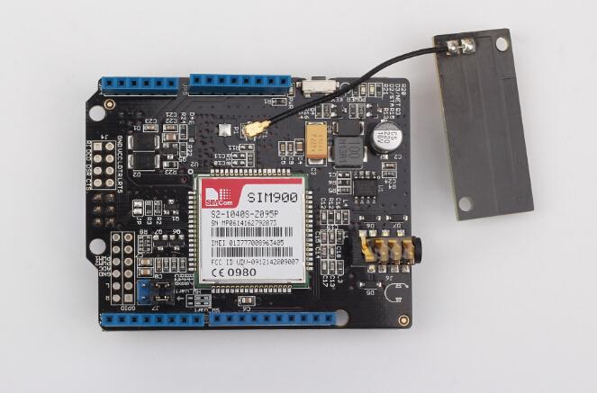
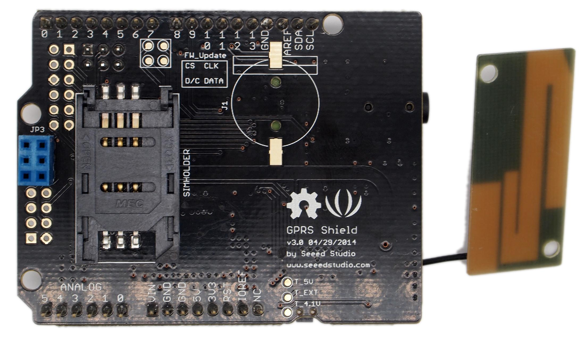
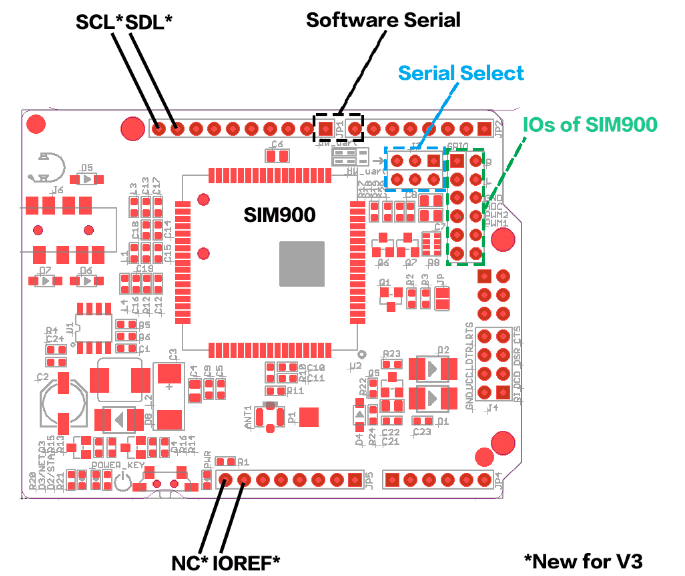

This is version 3.0 of GPRS Shield.
Hook your Arduino up to GSM/GPRS cell phone network with GPRS shield! You can use your Arduino/Seeeduino or other main boards to dial a phone number or send a text to your friend via easy to use AT commands now.
GPRS Shield features a quad-band low power consumption GSM/GPRS module SIM900 as well as a compact PCB antenna.Meanwhile, improvements on interfaces and basic circuit have been taken to make it more concise and reliable.
And there’re two choices for you to communicate GPRS shield with the main board -- UART or SoftwareSerial.
The difference between this version and the previous version is, changing the arduino socket to the latest Arduino Uno standard. Except this, all the features are same with the previous version.


Please link to the documentation of GPRS Shield V2.0 for specifications and application guide.
If you have questions or other better design ideas, you can go to our forum or wish to discuss.
Copyright (c) 2008-2016 Seeed Development Limited (www.seeedstudio.com / www.seeed.cc)